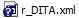
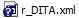

Download files to your Working Copy.
For the first time editing any help files, you must check them out from the network location using TortoiseSVN Client. By default this action copies the files and folder structure to the My Documents folder on your PC. It is recommended to have a folder named for each product you intended to edit. The following procedure takes advantage of the system's ability to generate a Working Copy folder for each version you check out, so there is no need to add the branch folder, etc.
-
Verify the
Checkout Depth is
Fully recursive and click
OK.
The download process begins.
Some notes on TortoiseSVN and file checkout:
- A complete install of TortoiseSVN includes a very detailed help file. Highly recommended reading if you're new to TortoiseSVN.
- If you checkout the entire HelpDocumentation folder, you are copying over 80,000 files stored in over 20,000 folders totaling approximately 1.7GB of disk space (as of July 2011) to your PC.
- The file/folder icons
in the checkout directory change slightly depending on their status. If the
file/folder is unchanged, the icon has a green checkmark (). When you make and save changes to an existing
file, the icon changes to a red exclamation point (
 ). Creating a new file/folder results in a blue
question mark (), which must be added to the source control log
by means of the
TortoiseSVN context menu.
). Creating a new file/folder results in a blue
question mark (), which must be added to the source control log
by means of the
TortoiseSVN context menu.
- Be aware that these files are still available on the network for others to checkout and work on if necessary.
- To compile a revised Help file, you must also checkout Support/Custom_OTs (not necessary if you checked out the entire HelpDocumentation folder).